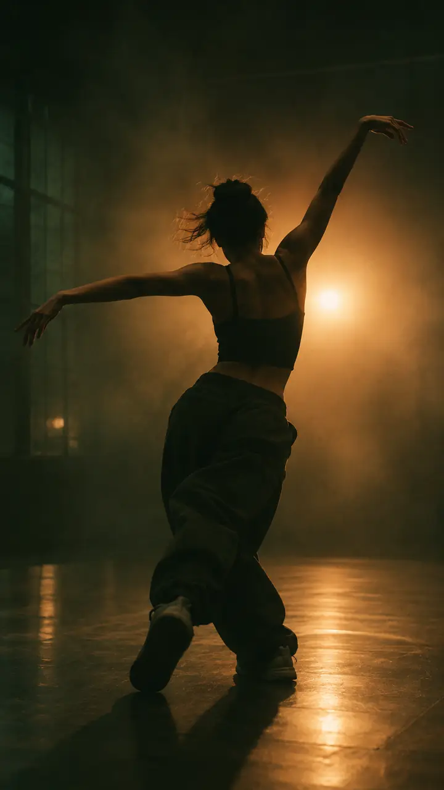
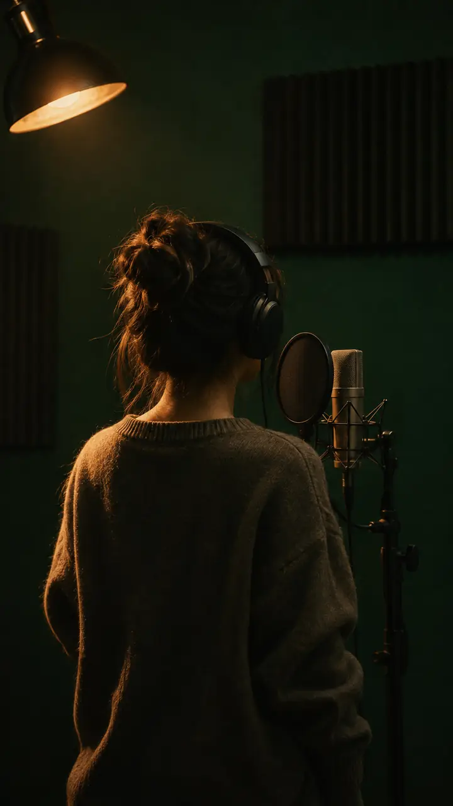
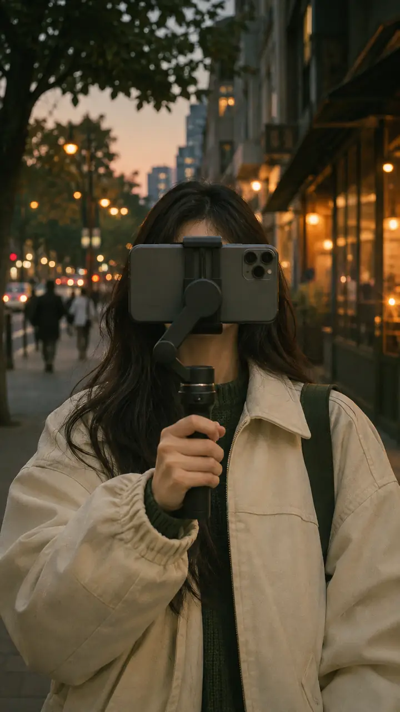
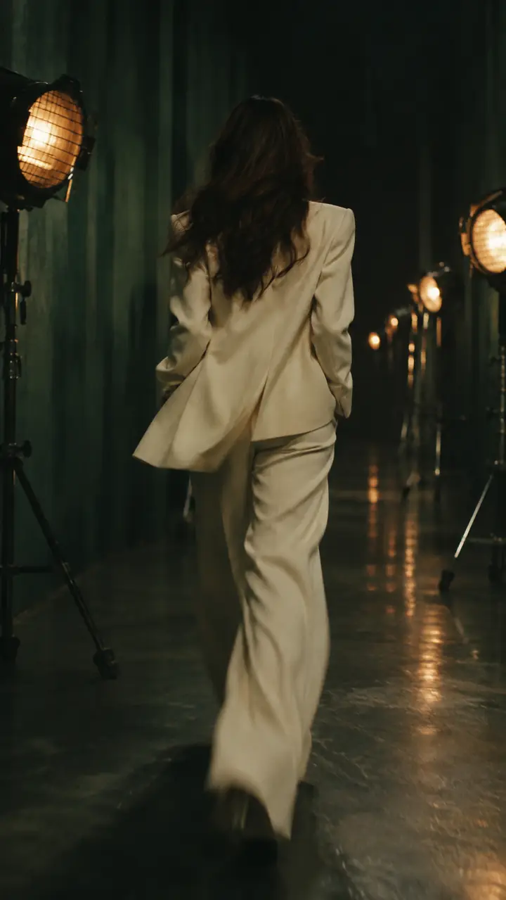

01 — PERSONAL BROADCASTING
개인의 매력을 방송만의 색으로 만듭니다.
방송인의 개성과 강점을 살펴 활동 방향과 방송 콘셉트를 설정합니다. 안정적인 방송 운영과 지속적인 콘텐츠 활동을 통해 시청자와의 관계를 넓혀갑니다.
- 방송인 발굴
- 방송 콘셉트
- 활동 방향
- 방송 운영
- 팬 커뮤니케이션

ASTRATALENT. PLATFORMS. INFLUENCE.
A NEW STAGE FOR EVERY TALENT
ASTRA는 개인방송부터 유튜브와 틱톡까지, 아티스트와 크리에이터가 자신에게 맞는 무대와 콘텐츠를 찾도록 함께합니다. 활동 방향 설정부터 콘텐츠 기획·제작, 채널 성장과 브랜드 협업까지 각자의 가능성이 더 큰 영향력으로 이어지도록 지원합니다.
01 — PERSONAL BROADCASTING
방송인의 개성과 강점을 살펴 활동 방향과 방송 콘셉트를 설정합니다. 안정적인 방송 운영과 지속적인 콘텐츠 활동을 통해 시청자와의 관계를 넓혀갑니다.
02 — YOUTUBE
채널의 정체성과 시청자에 맞는 콘텐츠를 기획하고 제작합니다. 반복해서 찾고 싶은 콘텐츠와 일관된 채널 이미지를 만들어 지속적인 성장을 돕습니다.
03 — TIKTOK
크리에이터의 개성과 플랫폼의 흐름을 반영해 숏폼 콘텐츠를 기획합니다. 트렌드에 맞는 콘텐츠 형식과 운영 방향을 찾아 더 많은 사람과 만날 기회를 넓힙니다.
04 — INFLUENCER
인플루언서의 이미지와 활동 분야에 맞는 브랜드 협업과 캠페인을 연결합니다. 크리에이터와 브랜드의 이야기가 자연스럽게 전해지는 콘텐츠를 함께 만듭니다.




DISCOVER
각자의 재능과 강점, 활동 목표를 살펴봅니다.
POSITION
방송과 채널의 정체성, 콘텐츠 방향을 구체화합니다.
CREATE
플랫폼과 크리에이터의 특성에 맞는 콘텐츠를 기획하고 제작합니다.
EXPAND
채널 성장과 팬덤, 브랜드 협업을 통해 활동 영역을 확장합니다.
WE MAKE NEXT.
당신의 재능을 들려주세요. 맞는 무대를 함께 찾습니다.